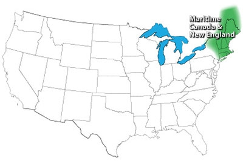
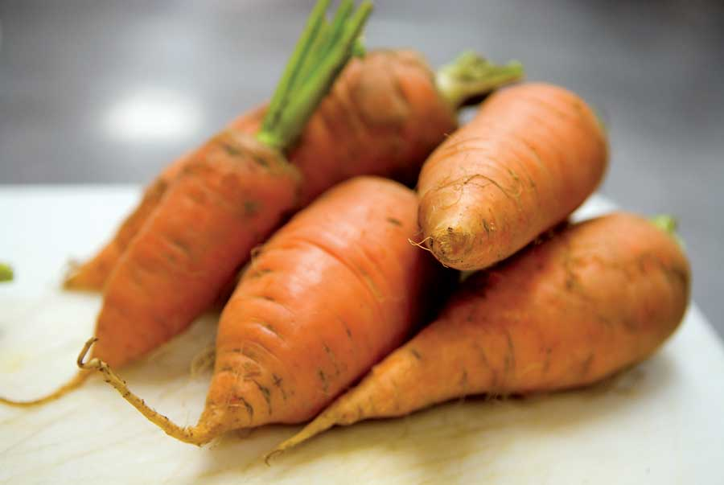

Carrots ranked well elsewhere, but they came out on top in the Northeast. Maine gardener Roy Antaki points out that carrots make two crops: one for fresh eating and one for winter storage. But it’s likely that the quality of up-east carrots is remarkably fine, too. Near Albany, N.Y., longtime gardener Janet Lincoln says she skips growing carrots some years in her rocky soil because the local carrots at the farmers market are so darn good.
Broccoli ranks high on the “most wanted” list in this region, but it can be challenging to grow because it is so sensitive to stressful weather. Antaki tries to make a big crop from his spring planting, but he says you can replant it as a fall crop if your first one disappoints. Janet Lincoln’s spring-planting strategy is to use a mixture of broccoli varieties that produce abundant side shoots, which she harvests until November. Her current favorite variety is ‘Arcadia,’ and she also plants ‘Windsor,’ ‘Small Miracle,’ ‘Dia’ and ‘Green King.’
Leeks are often a no-brainer in the Northeast, and these mild, long-shanked onions are great in short-term winter storage, or you can dry or freeze them for use in winter soups and stews. “I plant two varieties - ‘King Richard’ or ‘Lincoln’ - that need about 80 days to mature, and ‘Bleu de Solaize’ (110 days),” Antaki says. “The first ones are for summer cooking, freezing or drying. The long-maturing ones are uprooted and kept in buckets in the root cellar.” In this region, fresh leeks year-round may be easier than you think.
Cabbage family: Broccoli, kale, kohlrabi
Cucumber family: Winter squash
Leafy greens: Arugula, chard, mâche, mustard (all types), pac choi, sorrel, spinach
Legumes: Dry soup bean, edamame, snow/snap and shell pea
Root crops: Beet, parsnip, potato, rutabaga, shallot, sunchoke
Tomato family: Pepper (all types), tomatillo, tomato (all types)
Miscellaneous: Asparagus, leek, rhubarb, scallion, sweet corn
Read The Best Crops for Your Garden to find top crops for other U.S. gardening regions.
|
 NATE SKOW The Maritime Canada & New England gardening region. |
 JENNIFER MAY Crunchy carrots were rated as the No. 1 food garden crop by gardeners in Maritime Canada & New England. |
|